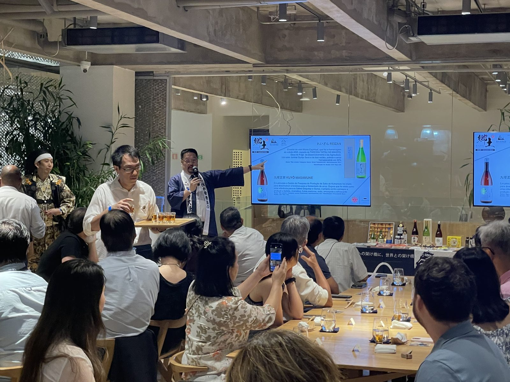

案件に合わせて必要な範囲を担当します。以下は代表的な支援の流れの草案です（案件により増減します）。

価格帯、規制、競合、流通ルートを現地で確認し、勝算のある入り方を検討します。
現地の反応をもとに、伝え方やパッケージ、商談資料を現地基準へ調整します。
バイヤーや流通先候補との商談を現場で実施し、その場の反応を次の判断材料にします。
単発の展示で終わらせず、貿易実務・現地定着まで含めて継続できる入口をつくります。
日本酒・焼酎など。海外の食文化への適応と、商談を通じた継続的な販路開拓を支援します。
検疫・輸出規制を踏まえた輸出体制の構築から、現地の反応を見ながらの商品・パッケージ調整まで対応します。
工芸品・生活雑貨など。現地の生活・購買習慣に合わせた見せ方・売り方の設計を支援します。
現地法人の設立、物流・金融インフラの整備、店舗コンセプトの現地適応まで、出店に必要な体制づくりを支援します。
まだ何も決まっていない段階でも相談できますか？
対象国や商材、予算、時期が未定の段階からのご相談を前提としています。まず現状の課題を整理するところから始めます。
小規模な事業者でも対応してもらえますか？
はい。少量輸出によるテスト販売や、補助金を活用した進出準備など、規模や体制に応じた進め方をご提案しています。
検疫や輸出規制が不安です。
現地の検疫・認可・ラベル規制の精査は、サービスページの「市場調査・現地リサーチ」で対応する範囲です。事前にリスクを可視化した上で進め方を設計します。
日本の企業の99.7％を占める中小企業にとって、人口減少により縮小する国内市場だけに依存しない選択肢を持つことは、未来を切り拓く力になります。地方の酒蔵、食品事業者、ものづくり企業とともに、海外販路の構想から商談、貿易実務、現地定着まで取り組んでいます。
対象、予算、時期が未定でも構いません。現在分かっていることと、まだ決まっていないことを整理します。
海外展開を相談する